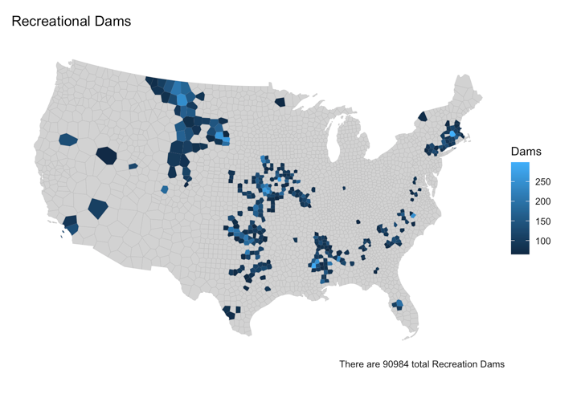
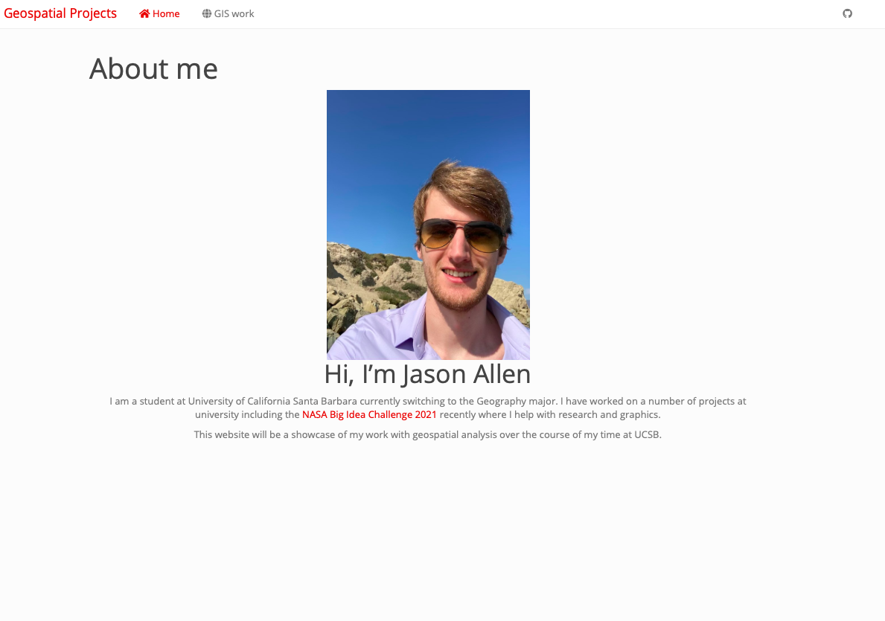

Projects
Fire Map Project 2023
In order to update my personal website so that I can use it as a
portfolio for my resume, I created a map using all the R coding
techniques I learned 2 years ago so that my R skills were refreshed and
up to date.

School Projects 2021
The final lab for my maps and spatial reasoning course was creating this website and publishing all of my class labs in it.
Interactive Web Mapping

This lab coincided quite well with my programming for GIS course since I had already been tought how to make a leaflet map when I got this lab.
These are some of the coding projects I completed as part of my Programming for GIS course.
Distances and Border Zone

The purpose of this lab was to get acquainted with using gghighlight and creating functions to further automate the processes we’re building.
Distances and Border Zone

The purpose of this lab was to get acquainted with using gghighlight and creating functions to further automate the processes we’re building.
Data Wrangling COVID 19

This assignment pushed us to utilize the new data manipulation skills we learned
in order to analyze the NY Times COVID current data set.
Building a project website. June 25, 2021

- Geography 13 course assignment
- In this assignment we built a static users site with Github Pages
- Includes a github repo for access to all the code.
- The final step was publishing the site.
- You should be reading this on the website right now.